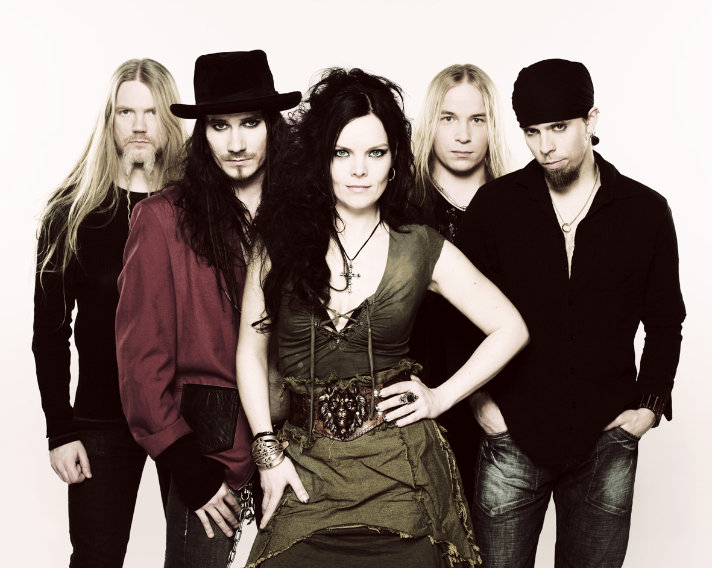
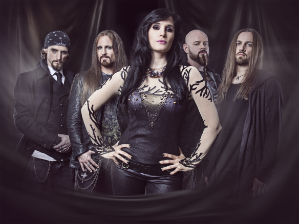

Symphonic Metal
Influences
Symphonic Metal traces it's roots to early death metal bands and gothic metal bands, who flirted with the idea of using symphonic elements in their music.
Description
Symphonic Metal, while incorporating heavy metal instrumentation and composition techniques, is primarily centered around the orchestral parts, usually played on a music workstation, but sometimes played by a live orchestra. This is contrary to other subgenres, as the bass, drums and guitars typically have more simplistic parts.
Symphonic Metal compositions are usually highly atmospheric and despite sometimes morbid lyrical themes, quite upbeat. Lead vocals are almost always taken on by a soprano female singer, while often times being accompanied by a male singer.
Brief History
In the early 1990s, death metal and gothic metal bands began to play using some orchestral elements in their songs. This laid the groundwork for symphonic metal.
Examples
- Nightwish
- Within Temptation
- Epica
- Therion
- Ex Deo
- Kamelot
- Avantasia
Subgenres and Regional Scenes
Major Subgenres
Epic Doom Metal is a subgenre that combines Doom Metal and Power Metal, most often with power metal derived vocals and doom metal derived riffs. Pioneered by Candlemass.
Symphonic Power Metal is a subgenre that combines Symphonic Metal and Power Metal, most often with keyboards and other power metal instrumentation in addition to the symphonic/orchestral rythyhm section commonly found in symphonic metal.